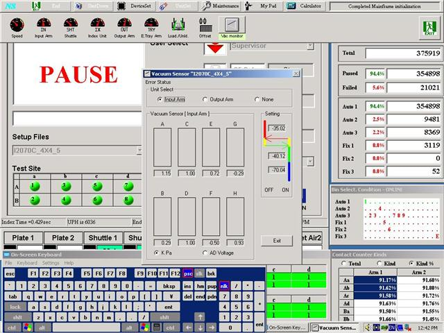
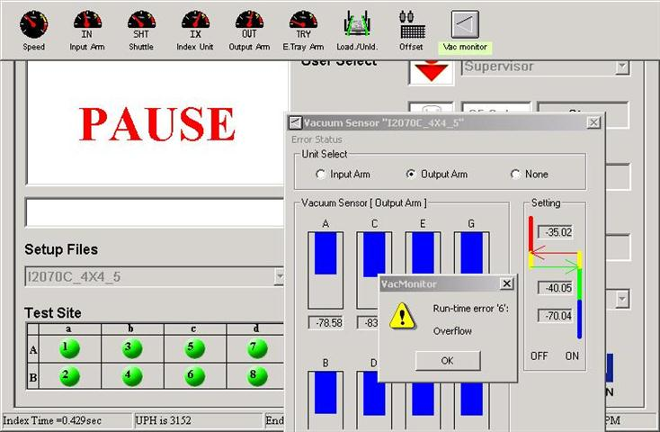
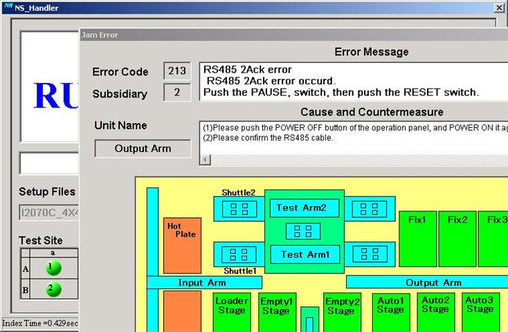

Service History
Subject: NS-8080 8 Hands High UPH Input arm hand H vacuum threshold value abnormal
Handler Model: UTAC NS-8080 (NS8080-01 s/n:181665) 8 Hands High UPH
Controller: RC520
Date: 25 Feb 2010
Symptom
On Tues 23 Feb, feedback by Roel input arm always encounter Jam0115-vacuum sensor off error. Feedback by line hand H vac reading abnormal. It was around -15KPa.
I pull out the vacuum tubing on top and below the vacuum sensor but the reading still same.
I re-sit the hand H black connector(CN19) and the reading became normal so I asked them to continue running and monitor.

Today 25/02, Roel informed the problem came back again. When i check the hand H vac reading, it was around -15KPa. I re-sit again the CN19 connector and monitored for an hour and check the reading again still ok. i don't think it's the problem of the hand filter. If filter is dirty, no matter how you re-sit the CN19 connector, it should still be -15Kpa.
Another issue is runtime error '6'.
When I pressed pause to check on vac reading for input arm, the output arm hands were closed up to place device on the unloading tray. I click on input arm to check the vacuum readings and then when I click on the ouput arm to check the reading, encountered runtime error '6':Overflow. At this time, the PC will hang up a while and a pop up window will appear with " we can't close all applications". After clicked Ok on this window, the START button can be pressed and "RS485 2Ack error will appear. Need to press RESET and HOME button and START to run handler again.
I tried 2 or 3 times when output arm hands closed at unloading tray and 1 time input arm hands closed at loading tray and then click to see the input and output hands vac reading and had the above issue.


Swapped Hand F CN15 and Hand H CN19 vacuum sensor connector but abnormal vac threshold still persist on Hand H in HMI vac monitoring window.
Action
26 Feb 2010 NS8080-01 input arm vacuum off error issue
1) Checked vacuum reading when triggered vacuum in IO monitor.
2) Hand H found out to be -13 to -15 Kpa, whereas other hands are below -10 Kpa.
3) Re-sit vacuum sensor connector, when triggered vacuum reading -7 Kpa. But slowly build up from -7KPa to -13 Kpa.
4) Swapped vacuum sensor and vacuum switching valve from Hand F. Same symptoms.
5) Increased vacuum threshold to -40 Kpa and Mid threshold to -45 Kpa and monitor.
5 Mar 2010
NS8080-01 now running octal 4x4.5 ambient setup. Latest issue is hand H vacuum sensor off error. Vac reading of hand H checked today around -4.00Kpa. HMI upgraded from 1.1 to 1.3 yesterday.
No vacuum sensor off error from 28 Feb 2010 till today 05 Mar 2010. This issue under monitoring.
Cause
Value when vacuum not trigger showed -20 Kpa. Re-sit vacuum sensor connector OK. Under monitoring.
Handler will encounter runtime error'6':overflow if check vac reading of input and output hands when their pitches are in the close condition. Confirmed problem with Hidaka san and advise from EPSON is not to check vac reading during hand close condition.